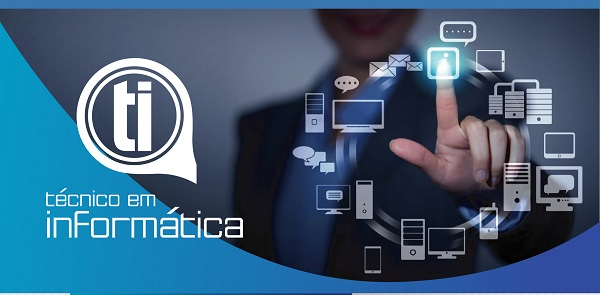

Informática essencial para todos!

O curso de “INFORMÁTICA ESSENCIAL PARA TODOS” foi desenvolvido pensando nas reais necessidades de um aluno iniciante.
Neste curso, o aluno aprende o essencial da informática de uma forma prática e produtiva, através de exemplos completos. Dividido em sete cursos, o curso apresenta recursos básicos, intermediários e avançados, porém, de forma didática, e com o objetivo final de capacitá-lo a utilizar um sistema operacional, construir documentos e planilhas inteligentes, navegar na internet, enviar e receber e-mail, antivírus, scanner, criar apresentações e também a trabalhar com banco de dados entre outras habilidades.
Conteúdo programático
- Windows essencial - Access essencial
- Word essencial - Internet essencial
- Excel essencial Ferramentas essencia
- Excel avançado - Ferramentas essencial
Matéria e carga horária
- Carga horária média: 81 horas.
- Pré-requisitos: não há pré-requisitos.
A quem se destina: Destina-se a qualquer pessoa que deseja aprender habilidades essenciais de informática para uso no dia-a-dia.
Objetivo: Objetivo principal é dotar os qualificados de conhecimentos que os tornem capazes de desempenhar funções essenciais no Windows e nos aplicativos mais utilizados da área de informática.
Técnicas didáticas: 7 simuladores e 4 apostilas.